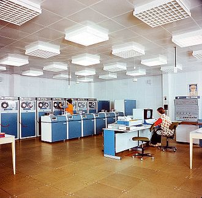

Kilka słów o komputerach
Co to jest komputer?
Mimo że mechaniczne maszyny liczące istniały od wielu stuleci, komputery w sensie współczesnym pojawiły się dopiero w połowie XX wieku, gdy zbudowano pierwsze komputery elektroniczne. Miały one rozmiary sporych pomieszczeń i zużywały kilkaset razy więcej energii niż współczesne komputery osobiste (PC), a jednocześnie miały miliardy razy mniejszą moc obliczeniową. Współcześnie są prowadzone także badania nad komputerami biologicznymi i optycznymi.
Małe komputery mogą zmieścić się nawet w zegarku i są zasilane baterią. Komputery osobiste stały się symbolem ery informatycznej. Najliczniejszymi maszynami liczącymi są systemy wbudowane sterujące najróżniejszymi urządzeniami – od odtwarzaczy MP3 i zabawek po roboty przemysłowe.
Komputery i inne maszyny liczące

 Komputer od typowego kalkulatora odróżnia zdolność wykonywania wielokrotnie, automatycznie powtarzanych obliczeń, według algorytmicznego wzorca zwanego programem, gdy tymczasem kalkulator może zwykle wykonywać tylko pojedyncze działania. Granica jest tu umowna, ponieważ taką definicję komputera spełniają też kalkulatory programowalne (naukowe, inżynierskie), jednak kalkulatory służą tylko do obliczeń numerycznych, podczas gdy nazwa komputer najczęściej dotyczy urządzeń wielofunkcyjnych.
Komputer od typowego kalkulatora odróżnia zdolność wykonywania wielokrotnie, automatycznie powtarzanych obliczeń, według algorytmicznego wzorca zwanego programem, gdy tymczasem kalkulator może zwykle wykonywać tylko pojedyncze działania. Granica jest tu umowna, ponieważ taką definicję komputera spełniają też kalkulatory programowalne (naukowe, inżynierskie), jednak kalkulatory służą tylko do obliczeń numerycznych, podczas gdy nazwa komputer najczęściej dotyczy urządzeń wielofunkcyjnych.
Jakkolwiek istnieją mechaniczne urządzenia liczące, które potrafią realizować całkiem złożone programy, zazwyczaj nie zalicza się ich do komputerów. Warto jednak pamiętać, że prawzorem komputera jest abstrakcyjny model zwany maszyną Turinga, a pierwsze urządzenia ułatwiające obliczenia były znane w starożytności, na przykład abakus z 440 p.n.e.
W początkowym okresie rozwoju komputerów budowano komputery zerowej generacji na przekaźnikach i elementach mechanicznych.
Właściwie wszystkie współczesne komputery to maszyny elektroniczne. Próby budowania komputerów optycznych (wykorzystujących przełączniki optyczne), optoelektronicznych (połączenie elementów optycznych i elektronicznych), biologicznych (wykorzystujące wypreparowane komórki nerwowe) czy molekularnych (wykorzystujące jako bramki logiczne pojedyncze cząsteczki) są jeszcze w powijakach i do ich praktycznego zastosowania jest wciąż długa droga. Innym rodzajem komputera jest komputer kwantowy, którego układ przetwarzający dane wykorzystuje efekty fizyczne wynikające z mechaniki kwantowej.
Komputer od typowego kalkulatora odróżnia zdolność wykonywania wielokrotnie, automatycznie powtarzanych obliczeń, według algorytmicznego wzorca zwanego programem, gdy tymczasem kalkulator może zwykle wykonywać tylko pojedyncze działania. Granica jest tu umowna, ponieważ taką definicję komputera spełniają też kalkulatory programowalne (naukowe, inżynierskie), jednak kalkulatory służą tylko do obliczeń numerycznych, podczas gdy nazwa komputer najczęściej dotyczy urządzeń wielofunkcyjnych.
Jakkolwiek istnieją mechaniczne urządzenia liczące, które potrafią realizować całkiem złożone programy, zazwyczaj nie zalicza się ich do komputerów. Warto jednak pamiętać, że prawzorem komputera jest abstrakcyjny model zwany maszyną Turinga, a pierwsze urządzenia ułatwiające obliczenia były znane w starożytności, na przykład abakus z 440 p.n.e.
W początkowym okresie rozwoju komputerów budowano komputery zerowej generacji na przekaźnikach i elementach mechanicznych.
Właściwie wszystkie współczesne komputery to maszyny elektroniczne. Próby budowania komputerów optycznych (wykorzystujących przełączniki optyczne), optoelektronicznych (połączenie elementów optycznych i elektronicznych), biologicznych (wykorzystujące wypreparowane komórki nerwowe) czy molekularnych (wykorzystujące jako bramki logiczne pojedyncze cząsteczki) są jeszcze w powijakach i do ich praktycznego zastosowania jest wciąż długa droga. Innym rodzajem komputera jest komputer kwantowy, którego układ przetwarzający dane wykorzystuje efekty fizyczne wynikające z mechaniki kwantowej.